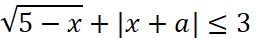
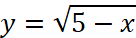
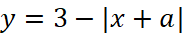
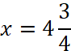
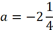
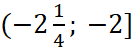

Задание:
Множество решений неравенства  отрезок, найти a.


Построим графики функций.
При a ∈ (-8; 4) график левой части неравенства ниже графика правой части неравенства. При a = -2 точка x = 5 становится решением (помимо отрезка), что противоречит условию.
При уменьшении а отрезок с правым концом в точке х = 5 входит в решение. Левый конец сдвигается до точки касания, в точке касания решение снова становится одним отрезком.
Случай касания:



Не удовлетворяет условию: 
Решение: